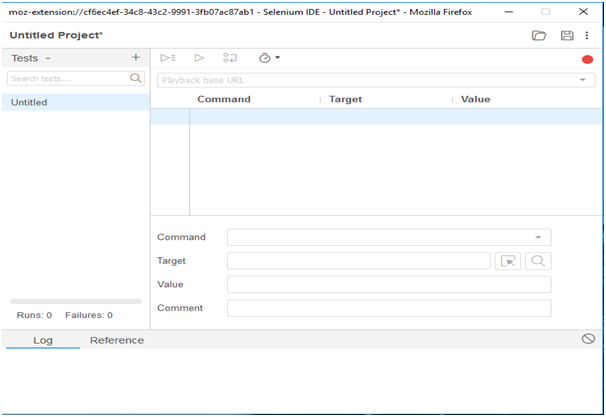
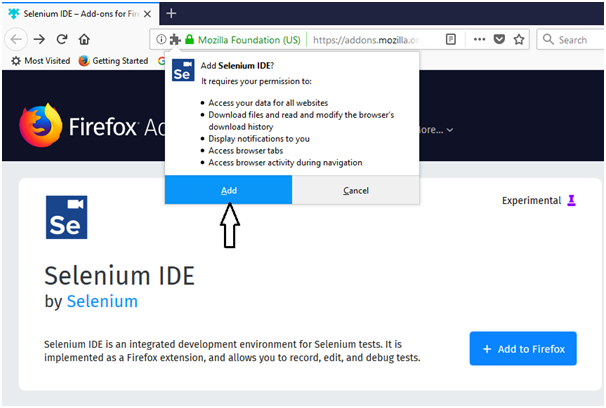
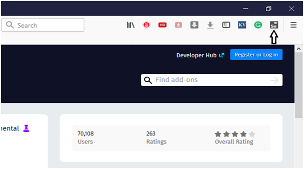
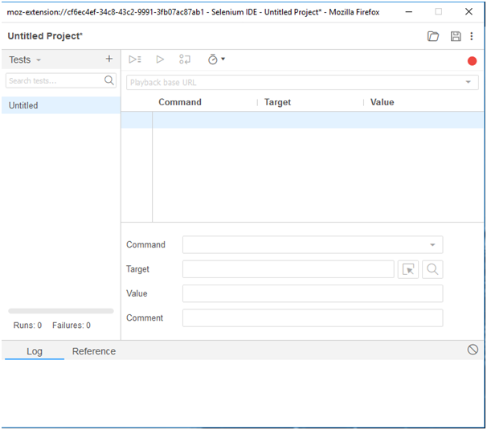

Selenium IDE-Installation
Since, Selenium IDE is available only as Firefox and Chrome plug-in, we assume that you have already installed Mozilla Firefox browser in your system. However, you can download the latest version of Firefox through their official website provided under the link given below.
Selenium IDE Download and Install
1-Launch Mozilla Firefox browser.
2-Open URLhttps://addons.mozilla.org/en-us/firefox/addon/selenium-ide/It will redirect you to the official add-on page of Firefox.
3-Click on "Add to Firefox" button.

4-A pop-up dialog box will be appeared asking you to add Selenium IDE as extension to your Firefox browser.
5-Click on "Add" button.

6-Restart you Firefox browser.
7-Go to the top right corner on your Firefox browser and look for the Selenium IDE icon.

8-Click on that icon to launch Selenium IDE.
